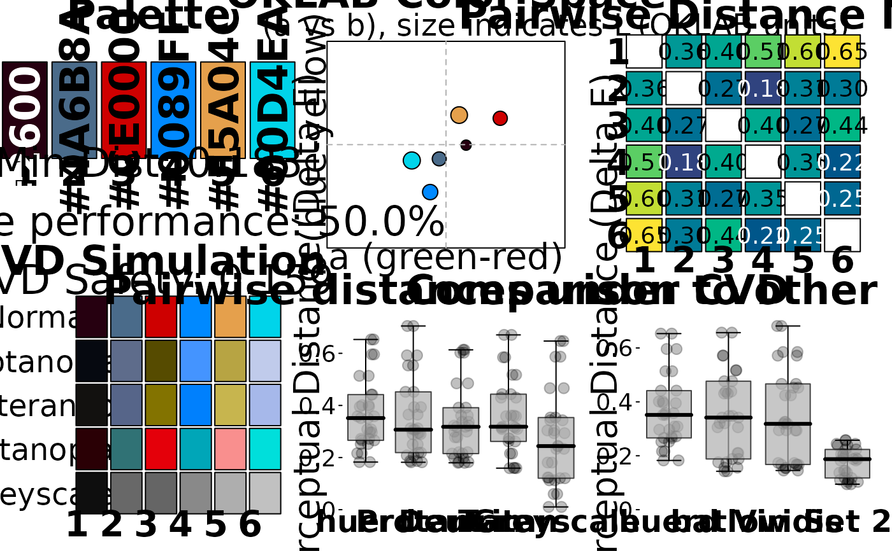

Generate Optimal Color Palette using Pure Minimax Optimization
Source:R/generate_palette.R
generate_palette.RdCreates a scientifically-grounded color palette that maximizes the minimum perceptual distance between any two colors using pure minimax optimization in the OKLAB color space. Colors are automatically sorted by brightness and can include fixed brand colors.
Usage
generate_palette(
n,
include_colors = NULL,
initialization = c("k-means++", "harmony"),
init_lightness_bounds = c(0.2, 0.9),
init_hcl_bounds = list(C = c(40, 80), L = c(50, 80)),
fixed_aesthetic_influence = 0.75,
aesthetic_init_config = NULL,
max_iterations = 1000,
return_metrics = TRUE,
progress = interactive(),
weights = NULL,
optimizer = "nloptr_cobyla"
)Arguments
- n
Integer. Total number of colors in the palette.
- include_colors
Character vector. Hex colors that must be included in the palette unchanged. Default is NULL.
- initialization
Character. Initialization method for free colors: "k-means++" or "harmony". Default is "k-means++".
- init_lightness_bounds
Numeric vector of length 2. For k-means++ initialization, target lightness (L in OKLAB) range for initial candidates. Default
c(0.2, 0.9).- init_hcl_bounds
List. For harmony-based initialization, target
C(Chroma) andL(Luminance) ranges for initial HCL colors. Defaultlist(C = c(40, 80), L = c(50, 80)).- fixed_aesthetic_influence
Numeric, 0 to 1. If
include_colorsare provided, controls how strongly their aesthetic properties influence the initialization for free colors. 0 = no influence, 1 = strong influence. Default is 0.75.- aesthetic_init_config
List. Advanced configuration for aesthetic initialization. Use
NULL(default) for built-in defaults.- max_iterations
Integer. Maximum optimization iterations. Default is 1000.
- return_metrics
Logical. Whether to return evaluation metrics as attributes. Default is TRUE.
- progress
Logical. Show progress messages. Default is
interactive().- weights
Named numeric vector. Weights for multi-objective optimization. Currently only supports
c(distance = 1)for distance-based optimization. Default is NULL (equivalent to pure distance optimization).- optimizer
Character. Optimization algorithm to use. Currently supported: "nloptr_cobyla" (default) for deterministic optimization with constraint handling, "sann" for stochastic simulated annealing (excellent quality but not perfectly reproducible without a seed), "nlopt_direct" for deterministic global optimization using the DIRECT algorithm (best choice for scientific reproducibility and high quality, though may be slower), "nlopt_neldermead" for derivative-free local optimization using the Nelder-Mead simplex algorithm (good alternative to COBYLA for robust local optimization). The framework is designed to easily support additional optimizers in future versions.
Value
A character vector of hex colors with class huerd_palette, automatically
sorted by brightness (lightness). If return_metrics = TRUE, includes evaluation
metrics as attributes.
Details
This function implements pure minimax optimization to create color palettes with maximum worst-case perceptual distinguishability. The approach is scientifically grounded and focuses on a single, clear objective.
The process:
Initialize free colors using k-means++ or harmony-based methods
Optimize using box-constrained nloptr to maximize minimum perceptual distance
Sort final palette by OKLAB lightness for intuitive ordering
Apply gamut compensation during brightness sorting
The pure minimax approach ensures optimal categorical color palettes without
complex multi-objective trade-offs. Quality can be assessed using evaluate_palette()
and visualized with plot_palette_analysis().
Performance Tips
For low performance ratios, try increasing
max_iterationsUse
progress = TRUEto monitor optimization convergenceInclude 2-3 fixed colors maximum for best optimization
Use diagnostic dashboard
plot_palette_analysis()for analysis
Examples
# Simple optimal palette
palette <- generate_palette(5, progress = FALSE)
print(palette)
#>
#> -- huerd Color Palette (5 colors) --
#> Colors:
#> [ 1] #002E00
#> [ 2] #0038CF
#> [ 3] #FF0076
#> [ 4] #F8A300
#> [ 5] #ACFFBF
#>
#> -- Quality Metrics Summary --
#> * Min. Perceptual Distance (OKLAB): 0.238
#> * Optimizer Performance Ratio : 57.9%
#> * Min. CVD-Safe Distance (OKLAB) : 0.177
#>
#> -- Generation Details --
#> * Optimizer Iterations: 456
#> * Optimizer Status: NLOPT_XTOL_REACHED: Optimization stopped because xtol_rel or xtol_abs (above) was reached.
# Brand-constrained palette
brand_palette <- generate_palette(
n = 6,
include_colors = c("#4A6B8A", "#E5A04C"),
progress = FALSE
)
# Using specific optimizer (deterministic)
optimizer_palette <- generate_palette(
n = 4,
optimizer = "nloptr_cobyla",
progress = FALSE
)
# Using simulated annealing (stochastic, excellent quality)
set.seed(42) # For reproducibility
sann_palette <- generate_palette(
n = 4,
optimizer = "sann",
progress = FALSE
)
# Using DIRECT algorithm (deterministic global, best for scientific reproducibility)
direct_palette <- generate_palette(
n = 4,
optimizer = "nlopt_direct",
progress = FALSE
)
# Using Nelder-Mead algorithm (derivative-free local, good alternative to COBYLA)
neldermead_palette <- generate_palette(
n = 4,
optimizer = "nlopt_neldermead",
progress = FALSE
)
# Evaluate quality
evaluation <- evaluate_palette(brand_palette)
cat("Min distance:", evaluation$distances$min, "\n")
#> Min distance: 0.182684
cat("Performance:", evaluation$distances$performance_ratio * 100, "%\n")
#> Performance: 49.9774 %
# Comprehensive analysis
plot_palette_analysis(brand_palette)
